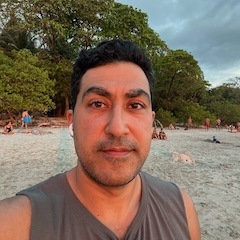
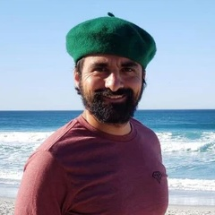

About
Art Box was created by Avand Amiri and Santiago Palacio. They met at a Halloween event but only got a chance to speak briefly. For about a year, they made efforts to try and see each other but it didn't work. Finally, Avand invited Santiago over for a small gathering with a few close friends but, after a long day at the river, none of the friends showed. Instead, Santiago and Avand got to connect over a couple bottles of champagne. It was over that champagne that they became friends, brothers, and business partners.
Avand Amiri
 Avand is a technologies and Airbnb Superhost based out of Mariposa. He came to Mariposa from the Bay Area and is proud to call the mountains home now. With a background in software, Avand handles the technical side of Art Box, including the website, the checkout process, and the QR code system.
Santiago Palacio
 Santiago Palacio is a printmaker, poet and painter currently working in Yosemite National Park. Originally from South America, Santiago currently lives in a rustic cabin in the park where he spends eight months of the year devoted to public service. Through his art as well as his work he aims to inspire people to fall in love with one of the greatest American legacies: the wild and public lands of the National Parks. Santiago's art is featured in some of the Art Boxes in Mariposa. He works closely with local artists to curate the art that goes into the boxes and helps run the operations of Art Box.
Back to homepage